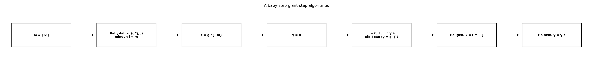

Tegyük fel, hogy egy Diffie–Hellman-kulcscsere során a támadó elfogja
a nyilvános értékeket:
és
.
A közös titok
meghatározásához a támadónak a diszkrét logaritmus problémát (DLP) kell
megoldania: adott
és
alapján keresi az
kitevőt, ahol
a
rendje. A naiv, „próbáljuk végig az összes kitevőt” módszer
időt igényel, ami nagy
esetén reménytelen. A baby-step giant-step (BSGS) algoritmus azonban
időt és
memóriát használ, ami drámaian jobb, és világossá teszi, miért kell a
csoport rendjének legalább
körülinek lennie a 128 bites biztonsághoz.
20.1.2 Szemléletes kép: a kitevő
felbontása
A BSGS alapötlete nagyon egyszerű. Válasszunk egy
egész számot. Ekkor bármely
felírható
alakban. Ezt az összefüggést beírva a
egyenletbe:
Ezt átrendezve:
A bal oldal az
indexű „nagy lépés” (giant step), a jobb oldal a
indexű „kis lépés” (baby step). Ha előre kiszámítjuk a
értékeket egy táblázatba, akkor a bal oldalt
szerint léptetve egy találat azonnal megadja
-et.

A baby-step giant-step algoritmus - A
baby-tábla és a giant-lépések találkozása adja meg a diszkrét
logaritmust.
Az ábra a lépések sorrendjét mutatja: először a kis lépéseket
tároljuk, majd a nagy lépésekkel keresünk ütközést. Ez pontosan ugyanaz
az idő–memória kompromisszum, mint amit a A DES
gyengeségei, a 3DES és a meet-in-the-middle támadás alfejezetben
láttunk a kettős DES törésénél.
20.1.3 Definíció és algoritmus
Definíció (diszkrét logaritmus probléma). Legyen
egy
rendű ciklikus csoport, és legyen
.
A diszkrét logaritmus probléma olyan
megtalálása, amelyre
Jelölésben:
.
Algoritmus (Shanks baby-step giant-step).
Bemenet:
,
,
a
rendje
.
Kimenet:
,
amelyre
,
vagy None, ha nincs ilyen
.
Számítsuk ki
értékét.
Építsünk egy hash-táblát a baby lépésekből: minden
esetén tároljuk a
párt.
Számítsuk ki
értékét.
Legyen
.
Minden
esetén:
Ha
szerepel a baby-táblában, legyen a tárolt érték
,
és térjünk vissza
értékkel.
Ellenkező esetben frissítsük
.
Ha nem találtunk ütközést, adjunk vissza None
értéket.
A hash-tábla szerepét az indokolja, hogy a
„
szerepel-e a táblában” ellenőrzés átlagosan konstans időben
végrehajtható, ezért a teljes futásidőt a lépések száma határozza
meg.
20.1.4 Helyesség bizonyítása
Tétel. Ha
,
akkor a baby-step giant-step algoritmus megtalálja az
kitevőt, és a futásideje
,
a memóriaigénye szintén
.
Bizonyítási terv. Először megmutatjuk, hogy minden
felírható
alakban, ahol
.
Ezután belátjuk, hogy az algoritmus giant lépései éppen elérik azt a
értéket, amely a baby-táblában van, tehát a találat bekövetkezik. Végül
összegezzük a lépésszámot.
Bizonyítás. Mivel
,
teljesül
.
Legyen
.
Maradékos osztással írjuk
Mivel
,
az
hányadosra is
teljesül, hiszen ha
lenne, akkor
,
ami lehetetlen.
Tegyük fel, hogy
,
és
a fenti felbontás. Az
-adik
giant lépésben a
értéke:
De
szerepel a baby-táblában, mert
.
Ezért az algoritmus az
-adik
iterációban megtalálja a
értéket, és visszaadja
értéket. Ez éppen a keresett kitevő.
Ha
,
akkor nincs olyan
,
amelyre
,
így az algoritmus egyetlen iterációban sem talál ütközést, és
None értéket ad vissza.
A futásidő: a baby-tábla felépítése
csoporthatványozást (vagy iteratív szorzást), a giant lépések legfeljebb
szorzást igényelnek. A hash-tábla műveletek átlagosan konstans időt
vesznek igénybe, így az összes lépés
.
A memória a baby-tábla
bejegyzéséből áll, tehát
.
∎
A giant lépéshez szükségünk van
értékre, és ennek inverzére modulo 19. Mivel
,
ezért
,
tehát
.
Az alábbi ábra a
kitevőket egy
-es
rácsra teszi (sor
,
oszlop
):
a baby-tábla az első sor, a giant lépések soronként ugranak, amíg a
érték a táblában meg nem jelenik.
Statikus változat (mint a PDF-ben)
BSGS
,
,
mellett: a kitevőrács cellája
(),
a baby-tábla az első sor,
,
a
-sorozat
;
a 3. giant lépésben
,
így
(számított)
Most indítsuk a
értéket.
:
,
nincs a táblában. Frissítés:
.
:
,
nincs a táblában. Frissítés:
.
:
,
ez a táblában a
értékkel szerepel.
A találat tehát
,
így
Ellenőrzés:
,
tehát valóban
.
Az algoritmus 5 baby lépést és 3 giant lépést végzett, összesen 8
csoportműveletet.
20.1.5.2 2. példa:
,
,
A
generátor a
csoportban, rendje
.
Itt
.
Baby lépések:
A tábla:
.
A giant lépéshez
.
Ennek inverze modulo 17:
,
tehát
.
Indulás:
.
:
,
nincs. Frissítés:
.
:
,
nincs. Frissítés:
.
:
,
nincs. Frissítés:
.
:
,
benne van a táblában
mellett.
Így
.
Ellenőrzés:
,
tehát helyes. Ez a példa azt is mutatja, hogy amikor
pontosan négyzetszám, az
érték elegendő, és a lépésszám pontosan
lehet a legrosszabb esetben.
20.1.6 Idő–memória kompromisszum és
a meet-in-the-middle kapcsolat
A naiv „próbáljuk ki az összes
-et”
módszer időigénye
,
memóriaigénye
.
A baby-step giant-step ezt az időt
-ra
csökkenti, de cserébe ugyanennyi memóriát használ. Ez a klasszikus
idő–memória kompromisszum iskolapéldája.
A kapcsolat a A DES gyengeségei, a 3DES és a
meet-in-the-middle támadás alfejezetben bemutatott
meet-in-the-middle támadással közvetlen: a kettős DES-nél a kulcspárt
alakban kerestük, és a két felét külön-külön tároltuk, majd középen
találkoztunk. Itt a kitevőt bontjuk fel két részre,
alakra, és a
baby-tábla, valamint a
giant lépések között keresünk ütközést. A „közép” itt a
egyenlőség.
A gyakorlatban a memóriaigény néha nagyobb probléma, mint az idő.
Például
esetén
,
ami 4,3 milliárd bejegyzést jelent. Ha egy bejegyzés egy 512 bites (64
bájtos) csoportelemből és egy 8 bájtos indexből áll, azaz 72 bájt, akkor
a tábla mérete
bájt, kb. 288 GiB. Ez nagy, de bizonyos szereplők (állami támadók, nagy
felhőszolgáltatók) számára elérhető lehet, ezért
nem ad 64 bites biztonságot, hanem legfeljebb 32 bites
szintet. Ezt a számlálást a továbbiakban pontosítjuk.
20.1.7 Python-illusztráció
A következő oktatási implementáció a
csoportban működik, és feltételezi, hogy
rendje ismert és
-val
jelöljük. A kód nem éles használatra készült.
# OKTATÁSI CÉLRA – NEM ÉLES HASZNÁLATRAimport mathdef baby_step_giant_step(g, p, q, h):""" Megoldja a g^x ≡ h (mod p) diszkrét logaritmus egyenletet, ha g rendje q. Visszaadja x-et, vagy None-t. """ m = math.isqrt(q -1) +1# ceil(sqrt(q)), q >= 1# Baby lépések: (g^j, j) tábla baby = {} val =1# g^0for j inrange(m): baby[val] = j val = (val * g) % p# Giant lépések előkészítése: c = g^{-m} mod p c =pow(g, -m, p) # Python 3.8+ moduláris inverz gamma = hfor i inrange(m):if gamma in baby:return i * m + baby[gamma] gamma = (gamma * c) % preturnNone# Példa: p=19, g=2, q=18, h=11x = baby_step_giant_step(2, 19, 18, 11)print("A diszkrét logaritmus:", x)print("Ellenőrzés:", pow(2, x, 19) ==11)
Várt kimenet:
A diszkrét logaritmus: 12
Ellenőrzés: True
A kód a baby szótárt építi fel iteratív szorzással; a
pow(g, -m, p) a moduláris inverz hatványozást végzi, így
nem kell külön kiterjesztett euklideszi algoritmust írnunk. A ciklus
legfeljebb
giant lépést hajt végre, ezért a futásidő
.
20.1.8 Valós életbeli alkalmazás:
miért kell legalább 256 bites prímrendű csoport?
A baby-step giant-step (és a vele rokon, kevesebb memóriát használó
Pollard-rho, amelyet a Pollard-rho a diszkrét
logaritmusra alfejezet tárgyal) megmutatja, hogy egy
rendű ciklikus csoportban a diszkrét logaritmus megoldható körülbelül
csoportművelettel. Ez a négyzetgyök-korlát határozza
meg a minimális biztonságos rendméretet.
Ha a cél 128 bites biztonság, azaz a támadónak legalább
alapműveletet kelljen elvégeznie, akkor a
feltételből
Ezért az olyan csoportokban, ahol a legjobb ismert támadás a
négyzetgyök-algoritmus, a rendnek legalább 256 bitesnek kell lennie.
Fontos, hogy ez a logika csak ott érvényes, ahol nincs
ennél gyorsabb módszer. A
multiplikatív csoportban létezik az index-kalkulus nevű
szubexponenciális algoritmus, amely sokkal nagyobb modulusméretet
követel; ezt az Index-kalkulus és a
paraméterválasztás alfejezetben részletezzük. Az elliptikus görbék
esetén viszont általában a
-korlát
a legjobb ismert támadás, ezért ott a 256 bites csoportrend a 128 bites
biztonsági szint standard választása (például az X25519 vagy a P-256
görbe). Ezt a paraméterválasztási elvet a Az ECDLP,
speciális támadások és a görbeválasztás alfejezet használja
majd.
Konkrét idő- és memóriabecslés: ha
,
akkor
.
Egy modern processzor több milliárd műveletet végez másodpercenként, így
a
lépés időben nem jelentős, de a
bejegyzésű tábla memóriaigénye a fent számolt kb. 288 GiB. Ez a
mennyiség ma már kapható, tehát egy
rendű csoport a gyakorlatban törhető. Ezzel szemben
esetén
,
ami
lépés; ez még a klasszikus fizikai világban elképzelhetetlenül nagy
munkaigény.
20.1.9 Tipikus hibák
Az
értékét lefelé kerekítik. Ha
,
akkor előfordulhat, hogy
,
és az
felbontás nem minden
esetén létezik
korlátokkal. Ilyenkor az algoritmus nem találja meg a kitevőt, vagy
hibás eredményt ad. Helyes: mindig
(elégséges) vagy egy ennél nagyobb értéket használjunk.
A csoport rendjét összekeverik a modulussal. A
csoport rendje
,
nem
.
Ha a felhasználó tévesen
értékkel számol, az
túl nagy lesz, és a kitevő értéke rossz tartományba esik.
Helyes:
mindig a
generátor rendje, és ellenőrizni kell, hogy
és
a legkisebb ilyen pozitív egész.
Nem ellenőrzik, hogy
a generált alcsoportban van. Ha
,
akkor nincs megoldás, de az algoritmus None értéket ad
vissza ciklus végén. A hívó ezt figyelmen kívül hagyhatja, és hibás
kulcscsere-egyeztetést hajt végre. Helyes: a BSGS
hívása előtt ellenőrizzük, hogy
(ha
a
rendje); ha nem, a csoportelem érvénytelen.
A baby-táblát lineáris kereséssel keresik. Ha a
táblát lista helyett szótárat használunk, a keresés átlagosan konstans
idejű; ha lineárisan végigpásztázzuk, a futásidő
lesz, ami tönkreteszi az algoritmust. Helyes:
hash-tábla vagy rendezett tömb bináris kereséssel.
A giant lépés inverzét rosszul számítják. A
kiszámításakor a negatív kitevőjű moduláris hatványozás nem azonos a
-edik
hatvány moduláris értékével egyes nyelvekben; például a
pow(g, -m, p) Pythonban helyes, de sok más nyelvben külön
inverzszámítás kell. Helyes:
,
ahol az inverzet a kiterjesztett euklideszi algoritmussal kapjuk.
Túl nagy q esetén a memória elfelejtése. A BSGS
memóriát igényel; ha
nagy, a tábla nem fér a memóriába. Ilyenkor a Pollard-rho algoritmust
kell választani, amely
memóriával éri el ugyanezt a
időkorlátot. Helyes: ismerjük a rendelkezésre álló
erőforrásokat, és válasszunk aszerint algoritmust.
20.1.10 Önellenőrzés
Igaz vagy hamis? A baby-step giant-step futásideje
,
memóriaigénye
.
Indokoljon.
Egy csoport rendje
.
Mennyi
?
Hány baby lépésre és legfeljebb hány giant lépésre van szükség?
Mi történik, ha
?
Mit kell ellenőriznünk a BSGS hívása előtt?
Adott
rendű csoport. Becsülje meg nagyságrendileg a BSGS lépésszámát, és
mondja meg, miért nem ad ez 64 bites biztonságot.
Mi a hiba ebben a konstrukcióban? „Elég
,
mert úgyis csak a maradékot keressük.” Magyarázza el a hibát.
20.1.11 Feladatok
1. feladat (A)
Hajtsa végre a baby-step giant-step algoritmust a
csoportban, ahol
és
.
Ellenőrizze, hogy
rendje
,
és adja meg a keresett
értéket.
2. feladat (A)
Adott
rendű ciklikus csoport. Számítsa ki
értékét, és magyarázza el, miért lesz a baby-tábla mérete és a giant
lépések maximális száma is legfeljebb
.
3. feladat (B)
Írjon Python függvényt a BSGS algoritmusra, és futtassa a
,
,
példán. Adja meg a visszatérési értéket, és ellenőrizze a kapott
kitevőt.
4. feladat (B)
Tegyük fel, hogy egy csoport rendje
,
és egy csoportelem reprezentációja 512 bit (64 bájt), egy index tárolása
pedig 8 bájt. Számítsa ki a baby-tábla hozzávetőleges méretét bájtban.
Hány ilyen tábla férne el egy 1 TiB memóriával rendelkező gépen? (1 TiB
=
bájt.)
5. feladat (C)
Bizonyítsa be formálisan, hogy a BSGS algoritmus legfeljebb
csoportműveletet végez, és hogy ha
,
akkor mindig megtalálja a kitevőt.
6. feladat (D)
Egy játékimplementáció a
,
paraméterekkel dolgozik, és a támadó elfogta a
publikus értéket. A
rendje
.
Írjon egy rövid BSGS-alapú kódot, vagy hajtsa végre kézzel a lépéseket,
és határozza meg a titkos
értéket. Ellenőrizze az eredményt.
20.1.12 Megoldások
20.1.12.1 Önellenőrzés –
válaszok
Hamis. A BSGS futásideje
,
memóriaigénye
.
A naiv brute force lenne
idő,
memória.
.
A baby lépések száma
;
a giant lépések maximális száma szintén
,
tehát legfeljebb 12 csoportművelet.
Ha
,
nincs megoldás, és a BSGS nem talál ütközést, ezért None
értéket ad. A hívás előtt ellenőrizni kell, hogy
(a csoport egységeleme), ami szükséges feltétele annak, hogy
a
által generált alcsoportban legyen.
.
Ez körülbelül 4,3 milliárd lépés, ami a mai technológiával
kivitelezhető, tehát a biztonsági szint legfeljebb 32 bit, nem 64 bit. A
64 bites biztonsághoz
kellene.
Ha
,
akkor lehet, hogy
.
Ekkor nem minden
írható fel
alakban
korlátokkal. Például
esetén
,
de
,
így
nem írható fel
alakban, ahol
.
Ezért a BSGS nem működik helyesen.
20.1.12.2 Feladatok megoldásai
1. feladat (A)
Először ellenőrizzük, hogy
rendje
.
Mivel
,
elég ellenőrizni, hogy
és
.
Számoljuk:
,
tehát nem 1.
kiszámításához:
,
,
így
,
ami nem 1. Tehát a rend valóban 22.
.
Baby lépések:
Tábla:
.
.
Inverz:
,
mert
.
Tehát
.
Indulás:
.
:
,
nincs. Frissítés:
.
:
,
benne van
mellett.
Így
.
Ellenőrzés:
,
helyes.
2. feladat (A)
.
A baby-táblában
értékeket tárolunk, tehát pontosan 11 bejegyzés. A giant lépések száma
legfeljebb szintén 11, mert minden
felírható
alakban, ahol
.
Ha
lenne, akkor
,
ami lehetetlen.
3. feladat (B)
Az előző Python kódot
,
,
,
paraméterekkel futtatva a következőt kapjuk. Ellenőrizzük a rendet:
és
,
,
,
ezért a rend tényleg 30.
.
Baby tábla:
.
Giant c =
;
,
inverz
,
tehát c = 2.
;
:
13 nincs;
;
:
26 benne van,
.
.
A kód visszatérési értéke 11, és
.
A pontos kód megegyezik a Python-illusztrációban bemutatott
függvénnyel, csak a paraméterek változnak.
4. feladat (B)
,
így
.
Egy bejegyzés mérete
bájt. A tábla mérete:
Ez körülbelül
GB (decimális), vagy
GiB (bináris). 1 TiB
bájt, tehát az 1 TiB-os gépen legfeljebb
ilyen tábla férne el, azaz gyakorlatilag 3 teljes tábla.
5. feladat (C)
A helyesség bizonyítása megegyezik a fenti tétel bizonyításával.
Röviden: minden
felírható
alakban, ahol
.
Az
-adik
giant lépésben
,
ami a baby-táblában van. Az algoritmus tehát megtalálja. A lépésszám: a
baby-tábla
szorzást, a giant lépések legfeljebb
szorzást igényelnek, így a teljes műveletigény
.
A hash-tábla műveletek átlagosan konstans időt vesznek igénybe, ezért a
futásidő
.
6. feladat (D)
A
,
csoportban
,
így
.
Baby lépések
():
.
Giant lépés:
.
Inverz:
,
tehát
.
Indulás:
.
:
,
nincs a táblában. Frissítés:
.
:
,
nincs. Frissítés:
.
:
,
nincs. Frissítés:
.
:
,
nincs. Frissítés:
.
:
,
nincs. Frissítés:
.
:
,
nincs. Frissítés:
.
:
,
benne van a táblában,
értékkel.
Tehát
.
Ellenőrzés:
,
például
,
,
,
;
,
.
A támadó tehát a titkos kitevőt megtalálta.
20.1.13 Rövid összefoglaló
A baby-step giant-step algoritmus egy
rendű ciklikus csoportban
időben és
memória mellett oldja meg a diszkrét logaritmus problémát. Az
választással a kitevőt
alakban keressük; a
baby-tábla és a
giant lépések közötti ütközés meghatározza
-et.
A helyességi bizonyítás azon múlik, hogy
miatt minden
egyértelműen felírható a kívánt alakban. Továbbvitt
eredmény: ha a csoportban a legjobb ismert támadás a
négyzetgyök-algoritmus, akkor a DLP megoldása körülbelül
lépést igényel; ezért 128 bites biztonsághoz
szükséges. Ezt a korlátot a Pollard-rho a diszkrét
logaritmusra alfejezet a memória O(1)-re csökkentésével használja
tovább, az elliptikus görbés paraméterválasztásban pedig a Az ECDLP, speciális támadások és a görbeválasztás
alfejezet épít rá. A
csoportban az index-kalkulus ennél gyorsabb, ezért ott a
paraméterválasztást külön kell kezelni.
20.1.14 Források és ellenőrzési
hiányok
A baby-step giant-step algoritmus klasszikus leírása megtalálható a
Handbook of Applied Cryptography (Menezes–van Oorschot–Vanstone)
diszkrét logaritmus fejezetében, valamint a Katz–Lindell és Boneh–Shoup
tankönyvek megfelelő fejezeteiben. A paraméterajánlások (128 bites
biztonság,
)
a NIST SP 800-57 és a kapcsolódó szabványok irányelvein alapulnak, de a
pontos táblázatok és a jelenlegi ajánlások időben változnak, ezért az
aktuális szabványdokumentumok ellenőrzése szükséges. A gyakorlati
memória- és időbecslések hozzávetőlegesek, és a hardver fejlődésével
frissítendők.